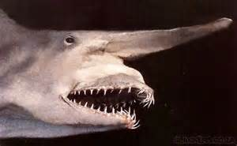

Lo squalo goblin
Lo squalo goblin (Mitsukurina owstoni Jordan, 1898), detto anche squalo folletto, unico membro vivente della famiglia dei Mitsukurinidi (Mitsukurinidae), è una specie di squalo abissale. La principale caratteristica distintiva di questo animale è la peculiare forma della testa. Lo squalo goblin, infatti, possiede un lungo rostro simile ad un becco, a forma di cazzuola, molto più lungo del muso delle altre specie di squalo. Tra le altre caratteristiche di questa specie ricordiamo il colore del corpo, quasi completamente rosa, e le lunghe mascelle protrudibili. Quando queste sono retratte all'interno della bocca, lo squalo goblin ricorda uno squalo toro, Carcharias taurus, di colore rosa con un naso insolitamente lungo.
Mitsukurina owstoni vive negli abissi oceanici, oltre i 200 metri di profondità, in acque dove non giunge mai la luce del Sole. Si incontra in tutto il mondo, dall'Australia, nell'Oceano Pacifico, al Golfo del Messico, nell'Oceano Atlantico. La maggior parte degli esemplari conosciuti, tuttavia, proviene dalle acque al largo del Giappone, zona ove la specie fu scoperta.
Lo squalo goblin si nutre di una grande varietà di organismi che popolano gli abissi. Tra le sue prede conosciute vi sono calamari abissali, granchi e pesci abissali. Si conosce molto poco della sua biologia e del suo comportamento riproduttivo, poiché è un animale che si incontra raramente. Sebbene possa sembrare una specie rara, non appare minacciata da alcuna sorta di pericolo e per questo non figura tra le specie considerate a rischio dalla IUCN.
Lo squalo goblin può raggiungere i 3,3 metri di lunghezza e i 159 chili di peso. Presenta il corpo semi-fusiforme tipico di tutti gli squali. Contrariamente all'immagine comune che l'uomo ha di questi animali, M. owstoni ha pinne basse e arrotondate, non appuntite, e quelle anali e pelviche sono molto più grandi di quelle dorsali. La coda, eterocerca, è molto simile a quella degli squali volpe, con il lobo superiore molto più lungo di quello di altre specie di squalo. Inoltre, la coda dello squalo goblin è priva di lobo ventrale.
La colorazione rosa, unica tra gli squali, è dovuta ai vasi sanguigni situati al di sotto della pelle semi-trasparente (molto delicata e tendente ad ammaccarsi con facilità). Le pinne hanno un colorito bluastro. Lo squalo goblin è privo di membrana nittitante, così come di tacca precaudale e di carene ai lati del peduncolo caudale. I denti anteriori sono lunghi e con i margini lisci, mentre quelli posteriori sono adatti per frantumare.
Fino al 25% del peso corporeo dello squalo goblin è costituito dal fegato. Tale caratteristica si riscontra anche in altri squali, come lo squalo elefante e lo squalo dal collare, e contribuisce al galleggiamento di questo animale, che, come tutti gli squali, è privo di vescica natatoria.
A causa dell'assenza di luce tipica degli abissi in cui vive, lo squalo goblin va in cerca di cibo percependo la presenza delle prede con gli organi elettro-sensitivi situati nel rostro. Una volta individuata una preda, protrude rapidamente le mascelle, utilizzando al contempo un muscolo simile a una lingua per risucchiarla tra gli acuminati denti anteriori. Tra le prede di cui si nutre ricordiamo una particolare specie di scorfano abissale (Helicolenus dactylopterus, ritrovato all'interno del corpo di un esemplare), cefalopodi e crostacei.